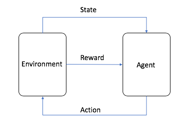
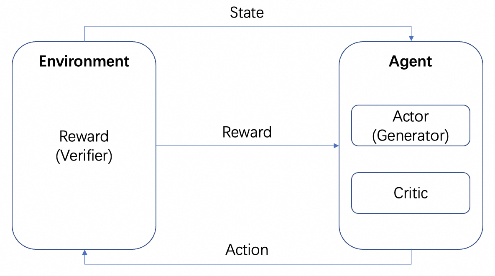
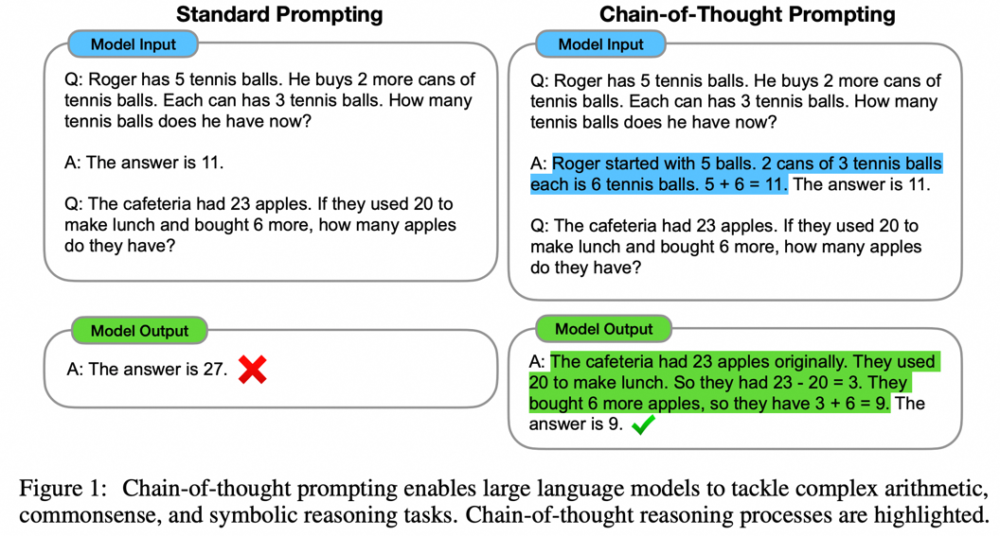
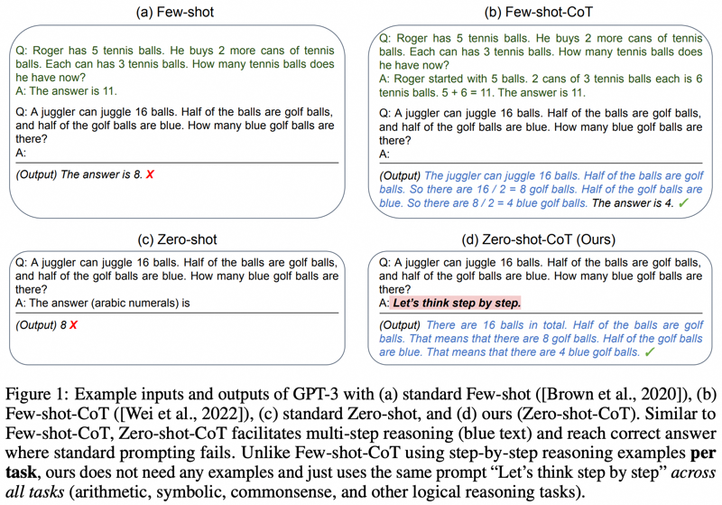
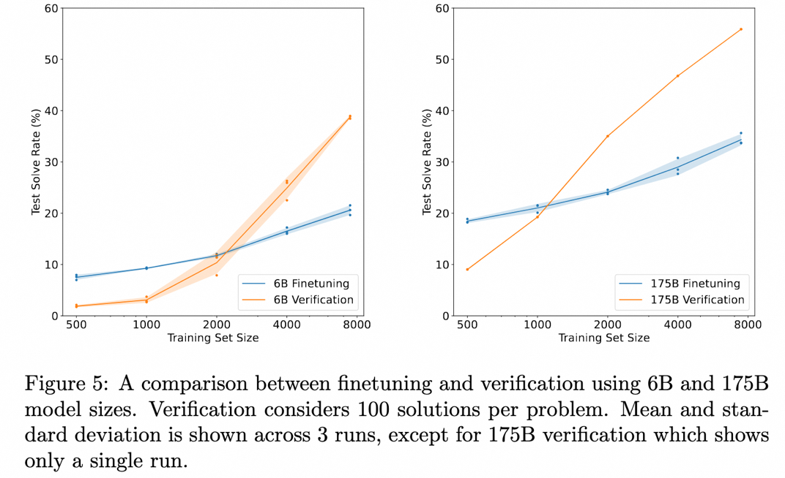
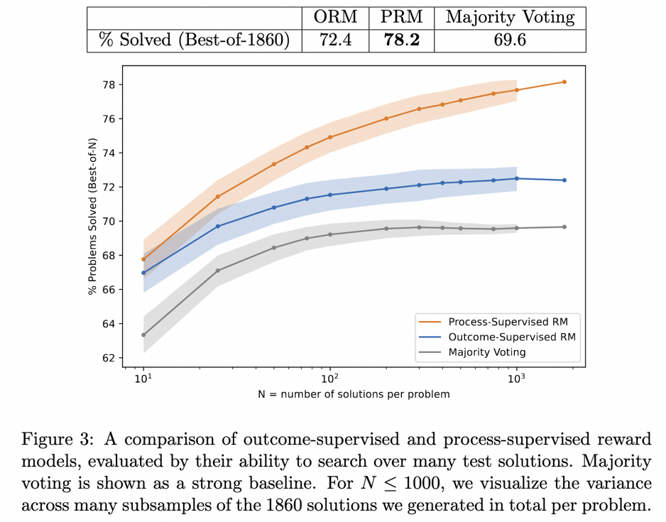
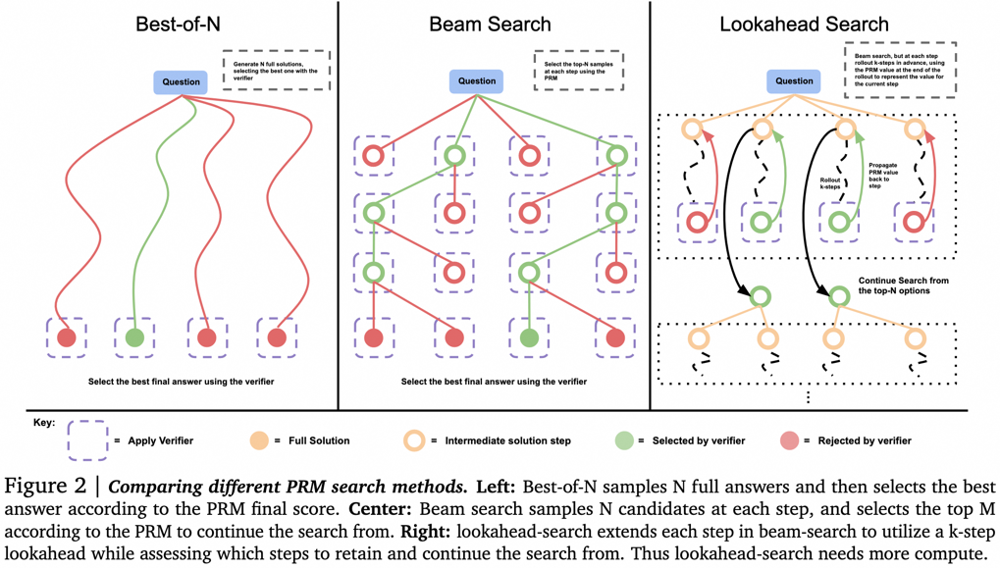
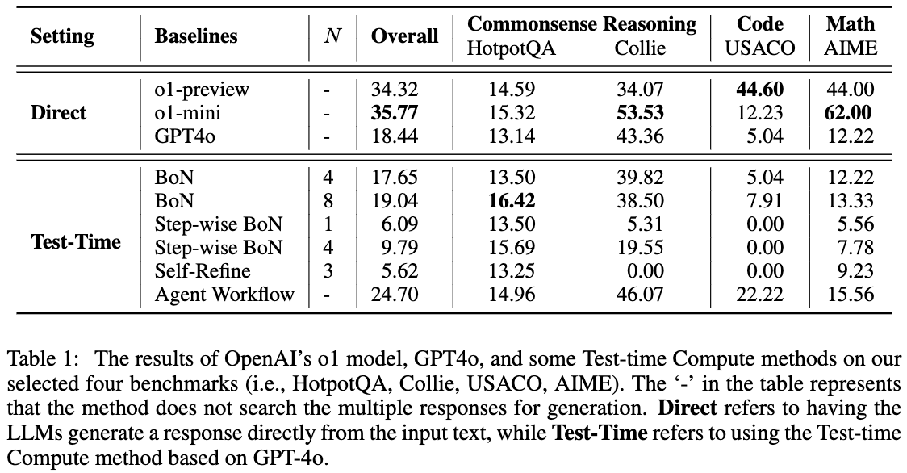
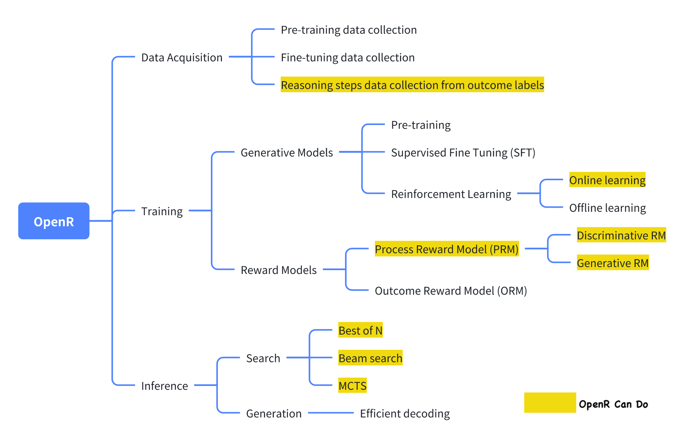
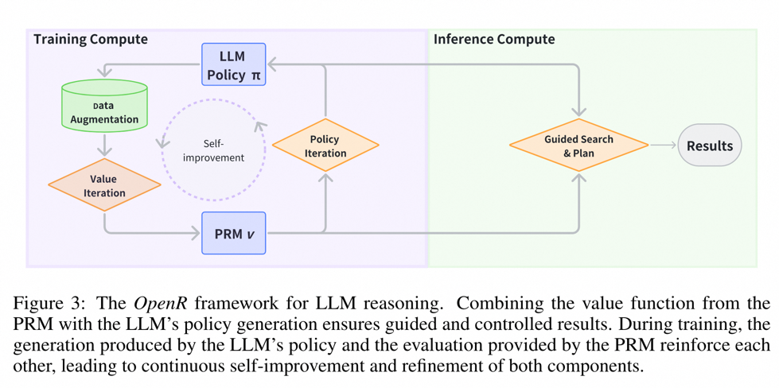

从 OpenAI-O1 看大模型的复杂推理能力¶
2022 年 OpenAI 发布了 ChatGPT，成为世界上最快突破上亿用户的 APP，那时候人们都认为，我们离真正的人工智能更近了。但是人们很快发现，ChatGPT 可以对话聊天，甚至可以写诗写文章，但在简单的逻辑上依然不尽如人意，比如那个著名的 "strawberry" 中有几个 "r" 的梗。
而两年以后的今天，OpenAI 又发布了 O1 模型，以其强大的逻辑推理能力和 OpenAI 强大的技术隐藏能力引发了人们对它背后方法的热烈讨论。本文梳理了一些相关文章，以对 O1 模型技术的猜测为引，看一看大模型的复杂推理能力的发展历程。
一、背景介绍¶
思维链¶
Chain of Thought，简称 CoT，是一种认知心理学和教育学中的概念，它描述了人们在解决问题或做出决策时思维的逐步发展过程。这个过程不仅仅是简单地从问题直接跳跃到答案，而是包含了多个步骤，每个步骤都可能涉及信息的收集、分析、评估以及对先前结论的修正。通过这种方式，个体能够更系统地处理复杂的问题，并构建出合理的解决方案。
监督微调¶
Supervised Learning，监督学习，是机器学习领域最常见的模型训练方式，使用标注好的数据集让模型从中学习，以准确分类数据或预测结果。输入数据进入到模型中时，监督学习会调整模型的权重，直到模型产生适当的拟合。
Supervised Fine-Tune，简称 SFT，是指我们在已有基座模型的上，使用专注于某一项特殊任务的数据集训练模型进行监督学习，以期其能从中学习到解决特殊任务的能力。
强化学习¶
Reinforcement Learning，简称 RL，强化学习是三种基本机器学习范式之一，与监督学习和无监督学习并列。强化学习的重点是在探索（未知）和利用（已知）之间找到平衡，让模型以最大化长期回报为目标，学习到正确的行为。

图片来自AWS，如图所示，在强化学习中，智能体 (Agent) 是我们最终需要训练的目标，与设定好的环境 (Environment) 进行交互行为 (Action) 并产生奖励 (Reward) 和状态 (state) 转移，Agent 根据奖励进行学习更好地选择下一步 Action，如此循环就是强化学习的训练过程。
在 LLM 的训练过程中，RL 起了重要作用，预训练阶段借助 RLHF 进行对齐已经成了业界共识。在 LLM 的强化学习中，我们通常需要一个另一个模型模拟环境，对 LLM 的输出进行奖励，这个模型称为 Reward Model，简称 RM。有关 LLM 的 RL 的介绍可以参考我们的另一篇文章，我们在这里仅介绍其一般范式：
我们会有多个模型：Actor 模型、Critic 模型和 Reward 模型。与上文标准 RL 的训练框架一致，在 RL 训练过程中，由 Actor 和 Critic 组成 Agent，Reward 则作为 Environment 进行训练。

但是训练结束之后，我们可以单独部署 Actor 或者 Reward 模型，其中 Actor 模型是我们的 Generator，Reward 模型则是我们用于衡量 Generator 生成质量的 Verifier，这就是 OpenAI 在 Let's verify step by step 这篇论文中提到的 Generator-Verifier 结构。
而 Reward Model 可以根据其反馈的细致程度分为：
-
基于过程的奖励模型 PRM：PRM 会根据 LLM 的中间结果给予反馈。
-
基于结果的奖励模型 ORM：ORM 则是在最终结果之后才给予反馈。
关于这两个概念我们在下文的具体场景中介绍。
蒙特卡洛树搜索¶
Monte Carlo Tree Search，简称 MCTS，是一个树搜索算法，核心思想是，每一步尝试多个行为并预测行为未来的可能收益，侧重于选择性探索一些更具有收益的行为。

图片来自维基百科。每一次探索称为分为四个步骤：
-
Selection：选择一个结点
-
Expansion：从这个结点生成一个新的结点进行探索
-
Rollout：沿着这个新的结点进行一次模拟，产生一个结果
-
Back Propagation：模拟的结果反向传播，更新路径上的结点
通过不断的探索，我们就能得到一棵树，并且每一个结点都有探索的可能结果，我们可以在这棵树中搜索得到最佳的路径或结果。
MCTS 用于 RL 时产生过 AlphaZero 这样知名的模型。AlphaZero 的做法是使用可训练的模型执行 Selection 和 Rollout 的步骤。从而减少 MCTS 庞大的搜索空间和模拟成本，以高效的得到最优解，比如：使用 Policy Network 高效搜索下一步的可能；使用 Value Network 判断每一步的价值而非 Rollout 模拟。
O1 的多步推理能力¶
提到 O1 模型，就不得不说起令人惊讶的多步推理能力。OpenAI 官网给出的几个例子直观的展示了其在 密码、代码、数学、填字游戏等多个方面的多步推理能力。其中“密码”相关的示例，解码得到的结果是 “THERE ARE THREE R’S IN STRAWBERRY” 也是对曾经 ChatGPT 推理能力的回应。

因此，我们主要探究了在这项能力方面的一些论文，整理总结如下：
二、提示词工程¶
在介绍用于提升模型推理能力的提示词工程之前，我们先要了解，什么是 Few-Shot Learning。目前人工智能的训练普遍需要大量的示例数据，而如果只使用很少的示例数据进行学习，就被称为 Few-Shot，如果完全不给示例，则称为 Zero-Shot。
《Chain of Thought Prompting Elicits Reasoning in Large Language Models》这篇论文提出的就是一种 Few-Shot 的方法提升模型的数学推理能力：

如图所示，左侧在输入 LLM 的 Prompt 中，给出了一个样例让 LLM 学习，这就是 Few-Shot Learning，但是其效果依然不理想。论文提出了右边这种带有 CoT 的 Few-Shot 范式。所以右侧在 Few-Shot 中，不仅给出一个示例的问题和答案，还给出了中间过程和结果。作者发现，这样使用 CoT 构造的 Few-Shot Prompt 提高了模型的推理能力。
而随着模型本身能力的提高以及研究的深入，《Large Language Models are Zero-Shot Reasoners》这篇文章进一步发现 Zero-Shot 也可以使用 CoT 来增强模型能力了：

无需费心费力构造一个 CoT 中间过程，甚至无需构造示例进行 Few-Shot，一句简单的 “Let's think step by step” 就可以增强 LLM 的能力。听起来不做白不做。这一 Prompt 后来被 OpenAI 拿去改了一改变成了《Let's verify step by step》，而这篇论文是目前所有想要了解 O1 的人反复阅读的核心。
当然仅仅依靠提示词工程构建 CoT 不可能是 O1 如此强大的原因，但 CoT 这种一步步推进逻辑的做法，成为大模型增强推理能力的主流方向。
三、CoT + Supervised Fine-Tune¶
当然，也有人尝试将 CoT 的多步推理能力使用 SFT 的方式教给 LLM。《STaR: Bootstrapping Reasoning With Reasoning》是一个早期尝试。下图来自该论文：

论文的思路是这样的。首先我们用上文的提示词工程的方式，让模型尝试 CoT 在数据集上进行推理，会得到一批答案，答案自然有对有错：
-
如果得到了正确的答案，我们认为模型产生的对应的 CoT 是优质 CoT，那么把这样的优质的“问题-CoT-答案”样本收集起来，就得到一个新的数据集，使用该数据集去 SFT 我们的 LLM，不断循环，就可以得到推理能力更强的 LLM；
-
而如果有一些问题上，LLM 始终答错，那我们直接让 LLM 看到“问题+答案”，让它生成一个从问题到答案的 CoT，我们可以认为，在已知答案的情况下，LLM 生成的 CoT 是正确的，于是这一部分“问题-CoT-答案”的样本也可以用于训练。
由于这篇研究时间较早，我们现在很容易发现其中的漏洞，比如：LLM 其实经常发生“过程错误但是结果正确”或者“过程正确但是结果错误”的情况，这意味着上文我们用于训练的样本其实并没有那么高的质量。那么如何得到更加正确的推理过程呢？
四、Monte Carlo Tree Search¶
上文我们已经知道 CoT 把从问题到答案的逻辑已经拆成了一个又一个中间思维过程，那么 MCTS 是否可以用于搜索下一步推理的最佳思维步骤，从而获得最佳推理思维链？自然可以。
《Mutual Reasoning Makes Smaller LLMs Stronger Problem-Solvers》就设计了这样一个 MCTS 算法，称为 rStar，他们将项目开源至了GitHub。下图来自该论文，是不是和上文 MCTS 的图片有一些相似之处了？

如上图所示，研究人员把 CoT 的中间步骤分成了 5 个类型的结点：
1. 产生下一步推理
2. 产生后续所有推理
3. 产生一个子问题及答案
4. 重新回答子问题
5. 重构问题
然后利用 MCTS 决定下一个思维步骤结点。由一个又一个思维结点链接起来的路径，就是 CoT。我们简单拿所有得到的最终结果进行投票，就能得到一个不错的结果。
当然，作者研究不止如此，如上文所说，必须要能够衡量每一步结点的正确性和推理的正确性，研究人员设计了如下方法：
-
Discriminator 筛选：在得到的原始推理路径后，随机 Mask 一部分，然后使用另一个模型进行输出，如果得到和原始 Generator 相同的结果，则说明原始推理路径可靠。
-
答案正确性：将所有的最终答案收集起来，某一个答案占所有答案的比例即为答案得分。
-
过程正确性：路径中每一个推理结点，并行生成若干 2 型结点生成若干一步到位的最终结果，这些结果中，目前路径的最终结果的比例视为该推理结点的过程得分。 通过三部分衡量，就能得到一条最佳路径，将最佳路径的最终结果视为 MCTS 的结果。
五、Generator + Verifier¶
除了上文的 MCTS 可以将思维过程组织成树形并进行探索，还有其他方式。比如强化学习，我们再次看强化学习的介绍：
如果我们把 LLM 作为 Actor，另一个针对问题训练的 RM 作为 Environment，加上一个隐含的 Critic。这样一个强化学习的循环就是：Actor 针对问题产生一个结果，RM 验证这个结果的正确性并反馈给 Agent，Actor 和 Critic 根据 Reward 进行学习训练。我们把这里的 Agent 称为 Generator，因为他的任务是产生结果；RM 称为 Verifier，因为他的任务是验证结果。
仔细想想，Agent 内部的 Actor 和 Critic 的关系，与 AlphaZero 使用的 Policy 和 Value 网络是不是很像？事实也是这样，Policy 和 Value 网络也符合 Actor 和 Critic 框架。
现在我们总结一下，一次强化学习的过程有 Actor、Critic 和 RM 三个网络参与。而在部署时，根据情况的不同，使用不同的框架部署：棋类游戏中只有在对局结束的时候，才能知道胜负，RM 给予的 Reward 太少，因此我们选择在部署时保留 Actor-Critic 框架，然后进行 MCTS 以获得更好的解决方案；而在 LLM 部署时，我们训练好的 RM 可以及时反馈，那么我们在部署的时候自然也可以组合 Actor 和 RM 成 Generator-Verifier 框架。
OpenAI 在 GPT3（ChatGPT 是基于 GPT-3.5 模型的）时代就已经在研究这个方向了。他们给出的方案是论文《Training Verifiers to Solve Math Word Problems》。下图来自该论文：

上图对比了：“仅仅微调 Generator 得到的结果的正确率” 和 “微调一个 Verifier，对 Generator 产生的多个结果进行评估，选择更高评价的结果的正确率”，证明了 Verifier 的有效性。
因为这里的任务是：根据问题推理得到结果。所以使用的 Generator 并不产生中间的推理过程而是直接产生结果，Verifier 也是我们在强化学习一节中提到的 ORM（基于结果的奖励模型），其作用是根据 Generator 的结果产生一个评分。所以这里并没有涉及我们想要探究的多步推理的过程，仅仅只是发现 ORM 验证得到的最终结果比简单微调更好。
于是 OpenAI 团队更进一步：一方面让 Generator 不再直接输出结果，而是产生逐步推理；另一方面，训练了一个 PRM（基于过程的奖励模型），作为 Verifier，其作用是针对 Generator 推理过程中的每一步产生评分。我们认为这样力求 Generator 推理的过程正确性所产生的结果，才是最有可能正确的。
这就是上文我们提到的《Let's verify step by step》。在这个工作中，团队对比了 PRM 和 ORM 分别作为 Verifier，搜索相同 Generator 产生的推理结果（此时他们的 Generator 已经是 GPT-4 了），证明 PRM 作为 Verifier 搜索得到的结果更准确。下图来自该论文：

上图说明，同一个逐步推理的 Generator 产生的结果，我们使用 ORM 作为 Verifier 选出结果最佳的答案是有效的，但我们使用 PRM 作为 Verifier 选出过程最佳的答案，正确率更高！
这是不是就是我们想要寻找的 O1 背后的技术呢？我们目前只能猜测，这是背后的核心技术之一。理由如下：
-
这篇论文距离 O1 的发布时间比较远，一年的时间足够 OpenAI 的研究人员更加深入研究这个方向。因为 PRM 的有效性，虽然一年时间也足够调整至其他方向，但我们还是认为他们是深入而非掉头。
-
文章证明了 PRM 作为 Verifier 的有效性，显然可以进行的下一步尝试是：利用强大的 Verifier 改善 Generator 以产生更优质的结果。但是论文并没有这方面推进，我们有理由相信 OpenAI 必定做了尝试，产生的结果是否就是 O1 不得而知。
说完猜测，我们继续探究利用 Verifier 进行搜索的其他方式。来自 Google DeepMind 今年 8 月份的文章《Scaling LLM Test-Time Compute Optimally can be More Effective than Scaling Model Parameters》做了更多的研究。这篇文章被许多人认为是展示了和 O1 背后原理类似的技术路线。下图来自该论文：

已知我们有了 Generator 和 Verifier，如何让他们互相配合得到最优结果呢？上文提到的一个方法是，Generator 并行采样得到多个结果，Verifier 评估后选择最高分。这就是上图里的左侧的 Parallel Sampling + Best-of-N 的做法。但是显然还有其他做法：
-
在产生多个结果的时候，除了并行采样多个结果，也可以让 Generator 产生一个结果之后，自己对结果进行检查和改正，得到一个答案序列，他们之间不再是平行的关系。
-
由 Verifier 进行选择的时候，除了 Best-of-N，也可以有其他办法。如来自该论文的下图所示：

论文发现，简单的问题，我们应该使用 Verifier 鼓励 Generator 进行自我检查和改正，而不是盲目并行搜索。而复杂的问题，Generator 并行尝试不同的方案是更好的选择。
类似的工作是《A Comparative Study on Reasoning Patterns of OpenAI's o1 Model》。论文团队在 GitHub 上开源了一个复刻 O1 的项目 Open-O1，这篇文章是他们在 O1 发布之后的一些调研成果。下图来自该论文：

团队使用 GPT-4o 作为骨架模型，然后使用四种常见的让 LLM 实现 thinking-before-reasoning 的方法，对比了他们的效果。团队发现，在 HotpotQA 任务上，Best-of-N 和 Step-wise BoN 的方式都能够明显提高 LLM 的推理能力，BoN 甚至使得 GPT-4o 超过了 O1 模型。
六、OpenR¶
以上介绍了一些在 LLM 复杂推理能力上的研究和相关论文。我们也调研了目前的一些尝试复刻 O1 的开源项目。OpenR 是其中完成度较高的一个。

图片来自其官方文档，目前来看，其实现了数据收集以及符合 Generator-Verifier 框架的训练与部署。
数据收集¶
根据官方介绍，数据收集方法来自论文：《Improve Mathematical Reasoning in Language Models by Automated Process Supervision》。简单来说，OpenR 团队使用 MCTS 扩展原有的 problem-final_answer 数据集，生成 CoT 推理步骤。最后得到一个 MATH-APS 数据集。
Generator 训练¶
团队使用强化学习中的 PPO 算法变体训练 Generator。简单来说，PPO 算法是利用 Reward Model 提供的 Reward 信息进行训练，同时限制 Actor，使其在学习过程中不偏离原始 Actor 太远，避免丢失已有的知识。目前 OpenR 支持 APPO、GRPO 和 TPPO 三个变体。
Virifier 训练¶
团队使用 SFT 监督学习训练一个 PRM，使用的数据集除了上文的 MATH-APS 数据集，还包括 PRM800K 、 Math-Shepherd 两个开源数据集。具体来说，在这三个 Step 级别的数据集上，团队对每一个 step 标注 “+” 或者 “-” 标签，然后让 PRM 学习预测每一个 Step 的标签，判断其正确与否。
推理部署¶
在部署时，OpenR 通过指定的 Generator 和 Verifier 使用搜索算法，获得推理过程和最终答案。目前支持 MCTS、Beam Search、best_of_n 三种搜索方式。

图片来自论文《OpenR: An Open Source Framework for Advanced Reasoning with Large Language Models》。OpenR 的结构如图所示，目前来说，OpenR 实现了一条复刻 O1 的链路，从收集训练数据到训练一个 PRM，再到使用 PRM 强化学习，最后部署模型进行搜索，并且团队将工作全部开源供社区学习尝试，让我们得以一窥究竟。
七、结论¶
我们调研的以上有关多步推理的论文，证明了让 LLM 逐步进行推理而不是跳过中间过程能够显著增强其在和逻辑相关的问题上的准确性。为了让 LLM 进行逐步推理，我们除了可以用简单的提示词工程引导，也可以使用一些带有中间过程的数据集进行微调。而更有效的做法是，训练一个能够逐步验证 Generator 准确性的 Verifier 对 Generator 生成的结果进行搜索。
从目前的猜测和论文来看，迈向 O1 的可能技术正是基于强大的 LLM Generator 和 LLM Verifier 之间的配合。这种左脚踩右脚，自己对抗自己进行自我迭代的做法，在深度学习领域已经不是第一次了，但 OpenAI 却是率先将这样的模式引入光训练 Generator 就耗资巨大的 LLM 领域，确实财大气粗。
因此我们认为，如果想要复刻 O1，首先需要的是一个可以为 Generator 提供辅助和指导的 Verifier，而为了产生训练 Verifier 所需要的数据，可以参考上文 CoT + Supervised Fine-Tune 和 Monte Carlo Tree Search 章节，以较低成本的方式获得较高质量的数据。这也就是为什么我们也介绍了这几项工作。
最后我们介绍了一个完成度较高的开源项目，基于他们的工作，我们得以整理自己的思路和想法。
八、参考¶
- Cobbe, Karl, Vineet Kosaraju, Mohammad Bavarian, Mark Chen, Heewoo Jun, Lukasz Kaiser, Matthias Plappert, et al. 2021. “Training Verifiers to Solve Math Word Problems.” https://arxiv.org/abs/2110.14168v2.
- Kojima, Takeshi, Shixiang Shane Gu, Machel Reid, Yutaka Matsuo, and Yusuke Iwasawa. 2022. “Large Language Models Are Zero-Shot Reasoners.” https://arxiv.org/abs/2205.11916v4.
- “Learning to Reason with LLMs | OpenAI.” n.d. Accessed October 22, 2024. https://openai.com/index/learning-to-reason-with-llms/.
- Lightman, Hunter, Vineet Kosaraju, Yura Burda, Harri Edwards, Bowen Baker, Teddy Lee, Jan Leike, John Schulman, Ilya Sutskever, and Karl Cobbe. 2023. “Let’s Verify Step by Step.” arXiv. https://arxiv.org/abs/2305.20050.
- “Monte Carlo Tree Search.” 2024. In Wikipedia. https://en.wikipedia.org/wiki/Monte_Carlo_tree_search.
- Qi, Zhenting, Mingyuan Ma, Jiahang Xu, Li Lyna Zhang, Fan Yang, and Mao Yang. 2024. “Mutual Reasoning Makes Smaller LLMs Stronger Problem-Solvers.” https://arxiv.org/abs/2408.06195v1.
- Snell, Charlie, Jaehoon Lee, Kelvin Xu, and Aviral Kumar. 2024. “Scaling LLM Test-Time Compute Optimally Can Be More Effective than Scaling Model Parameters.” arXiv. https://arxiv.org/abs/2408.03314.
- Wang, Jun, Meng Fang, Ziyu Wan, Muning Wen, Jiachen Zhu, Anjie Liu, Ziqin Gong, et al. 2024. “OpenR: An Open Source Framework for Advanced Reasoning with Large Language Models.” arXiv. https://arxiv.org/abs/2410.09671.
- Wei, Jason, Xuezhi Wang, Dale Schuurmans, Maarten Bosma, Brian Ichter, Fei Xia, Ed Chi, Quoc Le, and Denny Zhou. 2023. “Chain-of-Thought Prompting Elicits Reasoning in Large Language Models.” arXiv. https://arxiv.org/abs/2201.11903.
- Wu, Siwei, Zhongyuan Peng, Xinrun Du, Tuney Zheng, Minghao Liu, Jialong Wu, Jiachen Ma, et al. 2024. “A Comparative Study on Reasoning Patterns of OpenAI’s O1 Model.” arXiv. https://arxiv.org/abs/2410.13639.
- Zelikman, Eric, Yuhuai Wu, Jesse Mu, and Noah D. Goodman. 2022. “STaR: Bootstrapping Reasoning With Reasoning.” https://arxiv.org/abs/2203.14465v2.
- “什么是强化学习？- 强化学习简介 - AWS.” n.d. Amazon Web Services, Inc. Accessed October 22, 2024. https://aws.amazon.com/what-is/reinforcement-learning/.